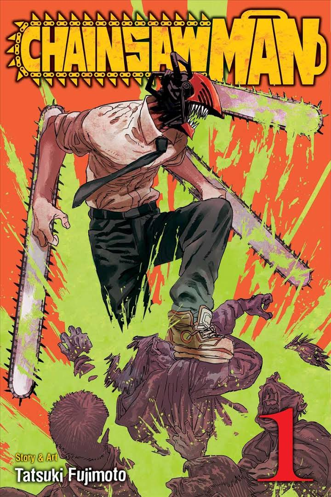

HOME
NEW
SUPPORT
ABOUT

Title: Chainsawman Blog: A Must-Visit Haven for Chainsaw Enthusiasts
Introduction:
In the realm of manga, there are stories that push boundaries, shatter expectations, and leave readers in awe. Chainsaw Man, created by Tatsuki Fujimoto, stands tall among them as a gritty, dark, and exhilarating tale that defies conventional storytelling. With its unique blend of action, horror, and emotional depth, Chainsaw Man has captivated readers around the world. In this blog post, we will explore the essence of Chainsaw Man and delve into the reasons why it has become a manga marvel.
A Dark and Twisted World:
Chainsaw Man unfolds in a world where demons lurk in the shadows, threatening humanity's very existence. Within this dystopian landscape, we meet Denji, a young man with a dark past, who becomes a devil hunter in exchange for his life. As Denji embarks on his journey, we are introduced to a host of memorable characters, each with their own motivations, secrets, and demons to confront. The manga expertly weaves together elements of horror, action, and mystery to create a gripping narrative that keeps readers on the edge of their seats.
Unconventional Protagonist:
At the heart of Chainsaw Man lies its unconventional protagonist, Denji. He is a complex character burdened by a tragic past, who finds solace and purpose in fighting demons. Denji's struggles, desires, and flaws make him relatable and compelling. As readers follow his journey, they witness his growth and evolution, exploring themes of identity, loyalty, and the search for meaning. Denji's raw emotions and unfiltered perspective give Chainsaw Man a distinctive and unforgettable voice.
Pulse-Pounding Action:
Chainsaw Man delivers adrenaline-fueled action sequences that leave readers breathless. From intense battles against fearsome demons to heart-pounding confrontations, the manga embraces its violent nature to create visually stunning and dynamic action scenes. The combination of Tatsuki Fujimoto's distinctive art style and the meticulous choreography of the fights elevates the manga to new heights, immersing readers in the chaotic and brutal world of Chainsaw Man.
Subverting Expectations:
One of the defining characteristics of Chainsaw Man is its ability to subvert expectations. The manga continuously surprises readers, challenging traditional storytelling conventions and defying genre norms. It fearlessly embraces bold narrative choices, introducing unexpected twists and turns that keep readers guessing and craving for more. Chainsaw Man is not afraid to break the mold, and it's this willingness to take risks that makes it an exhilarating and unpredictable read.
Themes of Humanity and Sacrifice:
Beyond its thrilling action and dark ambiance, Chainsaw Man explores profound themes that resonate deeply with readers. It delves into the essence of humanity, questioning what it means to be alive and the sacrifices one is willing to make for love, purpose, and survival. Through its thought-provoking storytelling, the manga forces readers to confront their own beliefs and reflect on the intricate complexities of human existence.
Conclusion:
Chainsaw Man is a masterpiece that pushes the boundaries of storytelling, captivating readers with its gripping narrative, unforgettable characters, and unapologetic exploration of the human condition. Tatsuki Fujimoto's unique vision and mastery of the medium have elevated Chainsaw Man to the ranks of manga marvels. Whether you're a fan of action, horror, or emotionally resonant storytelling, this manga will leave an indelible mark on your literary journey. Brace yourself for an exhilarating rollercoaster ride through the dark and twisted world of Chainsaw Man.